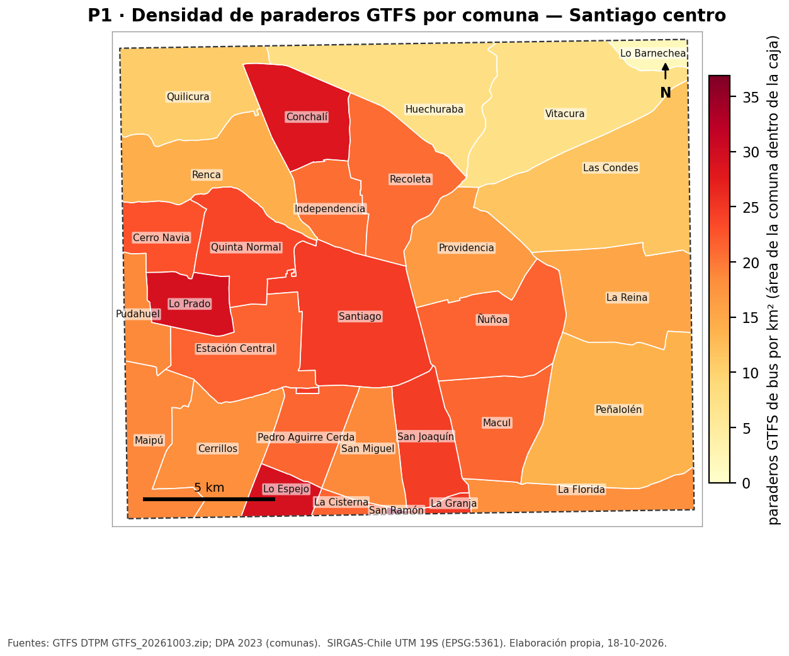
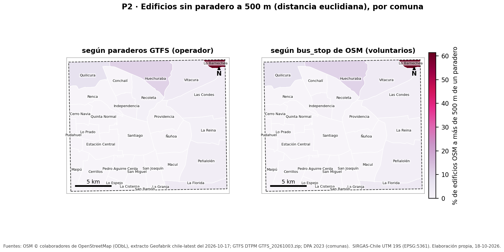
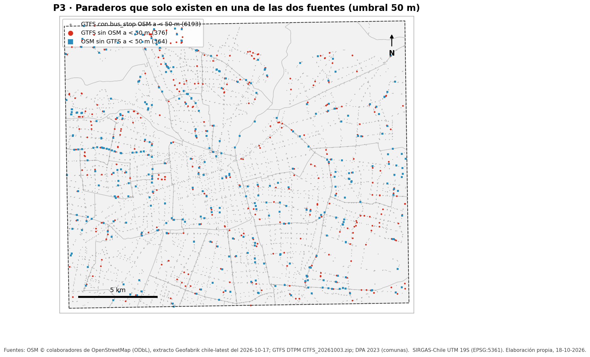
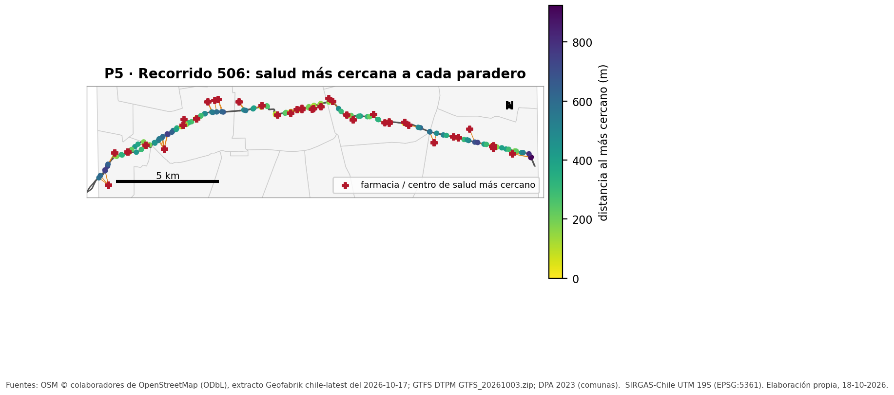
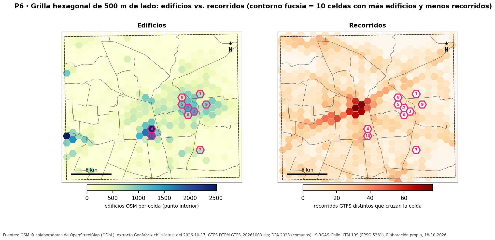

¿Cómo se relaciona la ciudad construida (OSM) con la red de transporte público (GTFS)?
| Fuente | Fecha / versión | En la caja (tablas derivadas) |
|---|---|---|
| OpenStreetMap (Geofabrik, chile-latest.osm.pbf) | 2026-10-17 | 118.950 edificios · 100.925 calles · 6.572 bus_stop · 20.989 amenidades |
| GTFS DTPM (GTFS_20261003.zip) | 03-10-2026 | 6.569 paraderos de bus · 708 shapes · 347 rutas · 1.098.529 stop_times |
| DPA 2023 — comunas (Lab 03, comunas_cl.sql) | 2023 | 30 comunas tocan la caja (13 completas) |
Caja lon -70.75,-33.52,-70.52,-33.36 (379,4 km²); todo en SIRGAS-Chile UTM 19S (EPSG:5361). Los paraderos OSM son los que alguien dibujó; el GTFS es lo que el operador declara: cada conclusión indica su fuente y fecha.
| Comuna | Paraderos | km² en caja | % en caja | por km² | por km² total |
|---|---|---|---|---|---|
| San Ramón | 6 | 0,2 | 3 | 36,9 | 1,0 |
| Lo Espejo | 118 | 4,0 | 49 | 29,2 | 14,3 |
| Lo Prado | 191 | 6,5 | 100 | 29,2 | 29,2 |
| Conchalí | 311 | 10,9 | 100 | 28,4 | 28,4 |
| La Granja | 27 | 1,1 | 11 | 25,0 | 2,7 |
| Santiago | 573 | 23,2 | 100 | 24,7 | 24,7 |
| San Joaquín | 244 | 9,9 | 100 | 24,6 | 24,6 |
| Quinta Normal | 282 | 11,8 | 100 | 23,9 | 23,9 |
| Cerro Navia | 163 | 7,1 | 64 | 22,9 | 14,7 |
| Estación Central | 310 | 14,4 | 100 | 21,6 | 21,6 |
| Ñuñoa | 363 | 16,9 | 100 | 21,5 | 21,5 |
| La Cisterna | 37 | 1,7 | 17 | 21,5 | 3,7 |
| Pedro Aguirre Cerda | 186 | 8,7 | 100 | 21,3 | 21,3 |
| Macul | 271 | 12,8 | 100 | 21,2 | 21,2 |
| Recoleta | 327 | 15,6 | 100 | 20,9 | 20,9 |
| Independencia | 152 | 7,3 | 100 | 20,7 | 20,7 |
| Maipú | 210 | 11,2 | 8 | 18,8 | 1,5 |
| Pudahuel | 96 | 5,1 | 3 | 18,7 | 0,5 |
| San Miguel | 179 | 9,6 | 100 | 18,6 | 18,6 |
| Cerrillos | 278 | 15,2 | 90 | 18,3 | 16,5 |
| La Florida | 165 | 9,1 | 13 | 18,2 | 2,3 |
| Providencia | 242 | 14,4 | 100 | 16,8 | 16,8 |
| La Reina | 263 | 17,1 | 73 | 15,4 | 11,2 |
| Renca | 239 | 16,7 | 71 | 14,3 | 10,1 |
| Peñalolén | 430 | 30,9 | 57 | 13,9 | 8,0 |
| Las Condes | 364 | 30,9 | 31 | 11,8 | 3,7 |
| Quilicura | 178 | 16,6 | 29 | 10,7 | 3,1 |
| Huechuraba | 165 | 21,0 | 47 | 7,9 | 3,7 |
| Vitacura | 194 | 26,4 | 92 | 7,4 | 6,8 |
| Lo Barnechea | 5 | 2,8 | 0 | 1,8 | 0,0 |

En la caja hay 6.569 paraderos GTFS de bus (17,3 por km² en promedio). La densidad más alta está en San Ramón (36,9/km²) y la más baja en Lo Barnechea (1,8/km²). 17 comunas quedan cortadas por la caja (San Ramón, Lo Espejo, La Granja, Cerro Navia, La Cisterna, Maipú…); para ellas la densidad se calcula sobre el área dentro de la caja, porque dividir por el área total (última columna) la subestimaría al no estar cargados sus paraderos de fuera. Fuente: GTFS DTPM (GTFS_20261003.zip), comunas DPA 2023.
| Comuna | Edificios | % lejos (GTFS) | % lejos (OSM) | OSM − GTFS (pp) | % GTFS sin borde |
|---|---|---|---|---|---|
| Lo Barnechea | 75 | 61,3 | 61,3 | 0,0 | 73,2 |
| Huechuraba | 1.268 | 10,7 | 10,4 | -0,3 | 15,6 |
| Quilicura | 2.291 | 7,5 | 7,5 | 0,0 | 4,2 |
| La Florida | 953 | 4,5 | 4,5 | 0,0 | 0,0 |
| Vitacura | 4.012 | 4,0 | 3,9 | -0,0 | 3,9 |
| Peñalolén | 3.464 | 2,9 | 2,5 | -0,4 | 2,9 |
| Las Condes | 10.840 | 2,6 | 2,5 | -0,1 | 1,6 |
| Recoleta | 3.085 | 1,9 | 1,0 | -0,9 | 1,9 |
| La Reina | 11.878 | 1,8 | 1,2 | -0,5 | 1,8 |
| Independencia | 1.374 | 1,7 | 1,5 | -0,2 | 1,7 |
| Providencia | 12.129 | 0,7 | 0,1 | -0,6 | 0,7 |
| Maipú | 9.793 | 0,2 | 0,2 | 0,0 | 0,0 |
| Renca | 2.851 | 0,1 | 0,1 | 0,0 | 0,2 |
| Cerrillos | 3.947 | 0,1 | 0,1 | 0,0 | 0,1 |
| Estación Central | 2.470 | 0,0 | 0,0 | 0,0 | 0,0 |
| La Cisterna | 412 | 0,0 | 0,0 | 0,0 | 0,0 |
| Macul | 5.230 | 0,0 | 0,0 | 0,0 | 0,0 |
| San Joaquín | 2.647 | 0,0 | 0,0 | 0,0 | 0,0 |
| Lo Prado | 915 | 0,0 | 0,0 | 0,0 | 0,0 |
| Pudahuel | 664 | 0,0 | 0,0 | 0,0 | 0,0 |
| La Granja | 150 | 0,0 | 0,0 | 0,0 | 0,0 |
| Conchalí | 1.341 | 0,0 | 0,0 | 0,0 | 0,0 |
| San Ramón | 10 | 0,0 | 0,0 | 0,0 | — |
| Pedro Aguirre Cerda | 1.154 | 0,0 | 0,0 | 0,0 | 0,0 |
| Santiago | 19.716 | 0,0 | 0,0 | 0,0 | 0,0 |
| Lo Espejo | 215 | 0,0 | 0,0 | 0,0 | 0,0 |
| San Miguel | 1.754 | 0,0 | 0,0 | 0,0 | 0,0 |
| Cerro Navia | 458 | 0,0 | 0,0 | 0,0 | 0,0 |
| Quinta Normal | 1.066 | 0,0 | 0,0 | 0,0 | 0,0 |
| Ñuñoa | 12.788 | 0,0 | 0,0 | 0,0 | 0,0 |
| Total Caja | 118.950 | 1,1 | 1,0 | -0,2 | 0,9 |

Con el GTFS, el 1,1 % de los 118.950 edificios de la caja queda a más de 500 m (en línea recta) de un paradero; con los bus_stop de OSM, el 1,0 %. La comuna peor cubierta según el GTFS es Lo Barnechea (61,3 %). La conclusión no cambia con la fuente: las diferencias son de pocos puntos porcentuales. Excluyendo los edificios a menos de 500 m del borde de la caja (cuyo paradero más cercano podría estar fuera) el porcentaje GTFS es 0,9 %: el efecto borde es menor. Fuentes: GTFS DTPM (GTFS_20261003.zip); OSM (Geofabrik, 2026-10-17).
| Umbral (m) | GTFS | GTFS sin OSM | % | OSM | OSM sin GTFS | % |
|---|---|---|---|---|---|---|
| 25 | 6.569 | 999 | 15,2 | 6.572 | 995 | 15,1 |
| 50 | 6.569 | 376 | 5,7 | 6.572 | 364 | 5,5 |
| 100 | 6.569 | 137 | 2,1 | 6.572 | 137 | 2,1 |
A 50 m, 376 paraderos GTFS (5,7 %) no tienen bus_stop en OSM, y 364 bus_stop de OSM (5,5 %) no tienen paradero GTFS. Con 25 m los porcentajes suben a 15,2 % y 15,1 %; con 100 m bajan a 2,1 % y 2,1 %: parte del desacuerdo es posición (el mismo poste dibujado a unos metros), no ausencia. El GTFS es lo que el operador declara que opera: un paradero GTFS sin par en OSM es sobre todo un vacío de OSM (nadie lo ha dibujado). Un bus_stop OSM sin par en GTFS puede ser un paradero eliminado o desplazado que OSM no actualizó, uno de otro servicio (rural, interurbano, de empresa), o un error de etiquetado. La falta de cobertura de OSM no es pareja: va de 0,0 % a 13,3 % (Huechuraba) según la comuna. Fuentes: GTFS DTPM (GTFS_20261003.zip); OSM (Geofabrik, 2026-10-17).

| Comuna | Rutas | km todos los shapes | km shapes principales | km bus | km / km² |
|---|---|---|---|---|---|
| Maipú | 65 | 1.283,9 | 1.153,9 | 1.143,4 | 103,2 |
| Santiago | 156 | 1.340,0 | 1.147,2 | 1.099,1 | 49,5 |
| Las Condes | 74 | 767,7 | 681,1 | 670,1 | 22,0 |
| La Florida | 67 | 840,5 | 675,8 | 652,9 | 74,5 |
| Pudahuel | 69 | 798,5 | 652,7 | 648,8 | 126,9 |
| Quilicura | 47 | 753,8 | 594,3 | 586,2 | 35,7 |
| Estación Central | 81 | 590,8 | 534,3 | 517,2 | 37,2 |
| Peñalolén | 68 | 662,3 | 459,7 | 449,7 | 14,9 |
| Ñuñoa | 61 | 600,6 | 417,5 | 387,3 | 24,7 |
| Renca | 37 | 440,1 | 405,3 | 405,3 | 24,2 |
| Providencia | 84 | 495,7 | 399,1 | 377,5 | 27,6 |
| Vitacura | 41 | 356,6 | 317,5 | 317,5 | 12,1 |
Se muestran 12 de 30 comunas; tabla completa en resultados/q4b_km_comuna_con_subdivide.csv.
Maipú concentra más kilómetros de recorrido (1.153,9 km de shapes principales, 65 rutas); por superficie, la red más densa está en San Ramón (839,9 km por km²). ST_Subdivide: la misma consulta tardó 2.496 ms contra las comunas completas y 2.495 ms contra las piezas subdivididas (×1,0), con resultados idénticos. Ida y vuelta se suman (son servicios distintos); las variantes cortas no (solo el shape principal de cada ruta y sentido). Fuente: GTFS DTPM (GTFS_20261003.zip).
Recorrido 506 (Maipu - Peñalolen; elegido (RUTA=506)): 117 paradas en la caja (ambos sentidos). Distancia a la farmacia o centro de salud más cercano: mediana 308 m, máxima 924 m (parada PD1429-Av. Diagonal Las Torres / esq. Álvaro Casanova); el 48 % tiene uno a 300 m o menos. Lo más cercano suele ser pharmacy (58), clinic (39), doctors (20). Distancia en línea recta; solo cuenta lo que está mapeado en OSM. Fuentes: GTFS DTPM (GTFS_20261003.zip); OSM (Geofabrik, 2026-10-17).
| Sentido | Orden | Paradero | Tipo | Más cercano | m |
|---|---|---|---|---|---|
| 1 | 1 | PD1429-Av. Diagonal Las Torres / esq. Álvaro Casanova | doctors | CECOSF General Carol Urzúa Ibáñez | 924 |
| 0,0 | 91 | PD1439-Av. Diagonal Las Torres / esq. Álvaro Casanova | doctors | CECOSF General Carol Urzúa Ibáñez | 909 |
| 0,0 | 90 | PD543-Avenida Grecia / esq. Av. Diag. Las Torres | doctors | CECOSF General Carol Urzúa Ibáñez | 802 |
| 1 | 57 | PI417-Parada / Colegio Santa María de Maipú | clinic | CESFAM Clotario Blest | 756 |
| 1 | 45 | PI5-Avenida 5 de Abril / esq. Vista Hermosa | clinic | Cecosf Villa Francia | 749 |
| 0,0 | 35 | PI389-Parada 2 / (M) Monte Tabor | pharmacy | Farmacias Saint Germain | 736 |


| # | Celda (i_j) | Comuna | Edificios | Recorridos | Paraderos | Índice | Lat | Lon |
|---|---|---|---|---|---|---|---|---|
| 1 | 472_7275 | Las Condes | 755 | 0,0 | 0,0 | 755,0 | -33,4264 | -70,5704 |
| 2 | 470_7273 | Ñuñoa | 1.344 | 3 | 4 | 336,0 | -33,4418 | -70,5868 |
| 3 | 471_7272 | Ñuñoa | 1.321 | 3 | 13 | 330,3 | -33,4459 | -70,5788 |
| 4 | 464_7270 | Santiago | 2.450 | 7 | 17 | 306,3 | -33,4646 | -70,6357 |
| 5 | 469_7273 | Providencia | 1.028 | 3 | 6 | 257,0 | -33,4378 | -70,5948 |
| 6 | 470_7272 | Ñuñoa | 765 | 2 | 10 | 255,0 | -33,4496 | -70,5870 |
| 7 | 472_7267 | Peñalolén | 702 | 2 | 2 | 234,0 | -33,4889 | -70,5716 |
| 8 | 469_7274 | Providencia | 456 | 1 | 2 | 228,0 | -33,4300 | -70,5947 |
| 9 | 473_7273 | La Reina | 894 | 3 | 4 | 223,5 | -33,4382 | -70,5626 |
| 10 | 464_7269 | Santiago | 1.870 | 10 | 10 | 170,0 | -33,4725 | -70,6358 |
La grilla tiene 636 celdas (527 completamente dentro de la caja). Una celda completa tiene en promedio 207,5 edificios y la cruzan 12,4 recorridos; la correlación entre ambos es 0,18. Las 10 celdas con más edificios y menos recorridos (índice edificios/(recorridos+1)) están en Ñuñoa (3), Santiago (2), Providencia (2), Las Condes (1), Peñalolén (1), La Reina (1); 1 de ellas no tienen ningún recorrido. Son candidatas a zonas construidas mal servidas, con dos cautelas: OSM puede tener edificios de más o de menos según quién mapeó la zona, y una celda sin recorridos puede estar a pocos metros de una avenida con muchos. Fuentes: OSM (Geofabrik, 2026-10-17); GTFS DTPM (GTFS_20261003.zip).
¿Sobre qué jerarquía de calles de OSM circula la red de buses del GTFS, y cuántos km de vías principales no tienen ningún bus? (y al revés: ¿qué parte de los trazados GTFS no coincide con ninguna calle OSM?)
Cada calle se parte en segmentos de 10 m (ST_Segmentize + ST_DumpSegments); un segmento «tiene bus» si algún tramo de recorrido de bus pasa a ≤ 15 m de su punto medio (EXISTS + ST_DWithin con GiST sobre los tramos subdivididos). Medir por segmento evita contar entera una calle que solo cruza una avenida con buses.
| Categoría OSM | km de calle | km con bus | % con bus | km sin bus | % de la red con bus |
|---|---|---|---|---|---|
| motorway | 323,6 | 269,2 | 83,2 | 54,4 | 11,7 |
| trunk | 3,6 | 0,3 | 9,6 | 3,2 | 0,0 |
| primary | 558,1 | 524,4 | 94,0 | 33,7 | 22,7 |
| secondary | 646,6 | 533,5 | 82,5 | 113,0 | 23,1 |
| tertiary | 903,9 | 497,5 | 55,0 | 406,4 | 21,6 |
| unclassified | 84,1 | 28,1 | 33,3 | 56,1 | 1,2 |
| residential | 2.443,9 | 250,1 | 10,2 | 2.193,9 | 10,8 |
| living_street | 1.791,2 | 93,4 | 5,2 | 1.697,7 | 4,1 |
| service | 1.221,1 | 110,5 | 9,0 | 1.110,6 | 4,8 |
De las vías principales de OSM, las primary tienen bus en el 94,0 % de su largo (33,7 km sin bus) y las secondary tienen bus en el 82,5 % de su largo (113,0 km sin bus). Las calles residenciales llevan el 10,8 % de los km de calle con bus. Mirado desde el GTFS, el 0,26 % de los km de trazado principal de bus (22,0 km, en 183 rutas) no tiene ninguna calle OSM a 15 m: esos tramos son o trazados imprecisos del operador o calles que faltan en OSM. Fuentes: OSM (Geofabrik, 2026-10-17); GTFS DTPM (GTFS_20261003.zip).
Resumen de los planes en resultados/planes/ (texto completo y JSON). En un Nested Loop el índice útil es el del lado interno: se sondea una vez por fila del externo. En los anti-join (NOT EXISTS) el índice queda en el subplan y se consulta una vez por fila evaluada, deteniéndose en el primer paradero que cumple. Sin el GiST cada sondeo es un recorrido completo de la tabla: el costo pasa de ~N·log M a N·M comparaciones exactas (columna «sin índices», medida con enable_indexscan/bitmapscan = off).
| Consulta | Índice usado — lado del join, veces sondeado | Tiempo |
|---|---|---|
| P1 punto en polígono | paraderos_gtfs_geom_gix — Nested Loop: lado interno, 86× | 40 ms → sin índices 532 ms (×13,4) |
| P2 anti-join 500 m | edificios_pto_gix — Nested Loop: lado interno, 86×paraderos_gtfs_geom_gix — dentro de un subplan, 118.950×paraderos_osm_geom_gix — dentro de un subplan, 118.950× | 4.720 ms |
| P3 anti-join 2 sentidos | paraderos_osm_geom_gix — dentro de un subplan, 19.707×paraderos_gtfs_geom_gix — dentro de un subplan, 19.716× | 945 ms |
| P4 sin subdividir | recorridos_geom_gix — Nested Loop: lado interno, 30× | 2.497 ms → sin índices 2.912 ms (×1,2) |
| P4 con ST_Subdivide | comunas_sub_cut_idx — Nested Loop: lado externo, 1×recorridos_geom_gix — Nested Loop: lado interno, 86× | 2.495 ms |
| P5 KNN <-> | viajes_route_idx — Nested Loop: lado externo, 1×recorridos_pkey — Nested Loop: lado interno, 2×stop_times_trip_idx — Nested Loop: lado interno, 2× | 15 ms → sin índices 599 ms (×39,5) |
| P6 construcción grilla | recorridos_tramos_geom_gix — Nested Loop: lado interno, 636×paraderos_gtfs_geom_gix — Nested Loop: lado interno, 636×edificios_pto_gix — Nested Loop: lado interno, 636× | 4.646 ms |
| P6 top 10 | comunas_sub_geom_gix — Nested Loop: lado interno, 521× | 100 ms |
| P7 jerarquía vial | recorridos_tramos_geom_gix — dentro de un subplan, 960.010× | 179.436 ms |
| Decisión | Qué se hizo y por qué |
|---|---|
| SRID | Todo en 5361 (SIRGAS-Chile / UTM 19S): métrico y conforme en la zona, así ST_DWithin, ST_Length y ST_Area trabajan en metros sin geography. OSM y GTFS llegan en 4326 y se transforman al derivar; la caja se densifica en 4326 antes de proyectarla. |
| Carga OSM | chile-latest.osm.pbf (recorte osmium extract --strategy complete_ways). ogr2ogr (driver OSM de GDAL) a un esquema de staging; las claves que no son columna (p. ej. amenity en los nodos) se leen de other_tags. |
| Punto interior vs polígono | Los edificios guardan su polígono y su ST_PointOnSurface. Cobertura (P2), comuna y grilla (P6) usan el punto: cada edificio cuenta una vez y cae siempre dentro de sí mismo (un centroide puede caer fuera de un edificio en «L» o con patio). |
| Reparaciones | 227 edificios inválidos (IllegalArgumentException: Invalid number of points in LinearRing found 2 - must be 0 or >= 4: 46; IllegalArgumentException: Invalid number of points in LinearRing found 3 - must be 0 or >= 4: 155; Self-intersection: 26) reparados con ST_MakeValid + ST_CollectionExtract (solo la parte poligonal); 201 quedaron vacíos y se descartaron; 0,0 inválidos al final. Amenidades-área inválidas: 26; comunas inválidas: 0,0. |
| Recorridos (shapes) | Una LineString por shape_id con ST_MakeLine(punto ORDER BY shape_pt_sequence::int): el cast importa, ordenando como texto 981 shapes quedarían con los vértices desordenados. shapes.txt (456.573 puntos) y stop_times (1.098.529 filas) entran con \copy, nunca INSERT por fila. |
| Varios shapes por ruta | Cada shape se asocia (vía trips) a la ruta y sentido con más viajes; 270 rutas tienen más de un shape. Se conservan todos, y es_principal marca el de más viajes por (ruta, sentido): P4 suma ida y vuelta pero no variantes; P6 cuenta rutas distintas (route_id). |
| Recorte a la caja | En SQL: paraderos por lon/lat dentro de la caja; shapes que la intersectan (completos); comunas con su área total y su área dentro de la caja (las densidades usan esta última). |
| Índices | GiST en cada geometría (incluido un GiST parcial de amenidades de salud y uno sobre los tramos subdivididos de los recorridos), B-tree en llaves de join; VACUUM ANALYZE al final. ST_Subdivide para comunas (≤ 255 vértices) y recorridos (≤ 32). No usados (pg_stat_user_indexes tras las consultas): amenidades_amenity_idx, amenidades_geom_gix, calles_highway_idx, comunas_geom_gix, edificios_geom_gix, mv_grilla_geom_gix, mv_grilla_ij_idx, recorridos_short_idx. Ejemplo: el GiST del polígono de edificios no lo usa nadie porque todas las consultas usan el punto interior; es un hallazgo: sobra si no se dibujan polígonos. |
| Qué no funcionó / límites | Distancias euclidianas, no por red vial. Efecto borde: lo que está justo fuera de la caja no se cargó (se cuantifica en P2 y se filtran celdas incompletas en P6). OSM es incompleto de forma desigual por zona (P3). COMPLETAR con lo que les haya fallado en su corrida. |
Generado el 18-10-2026 por informe/generar_informe.py a partir de resultados/ y salidas/.